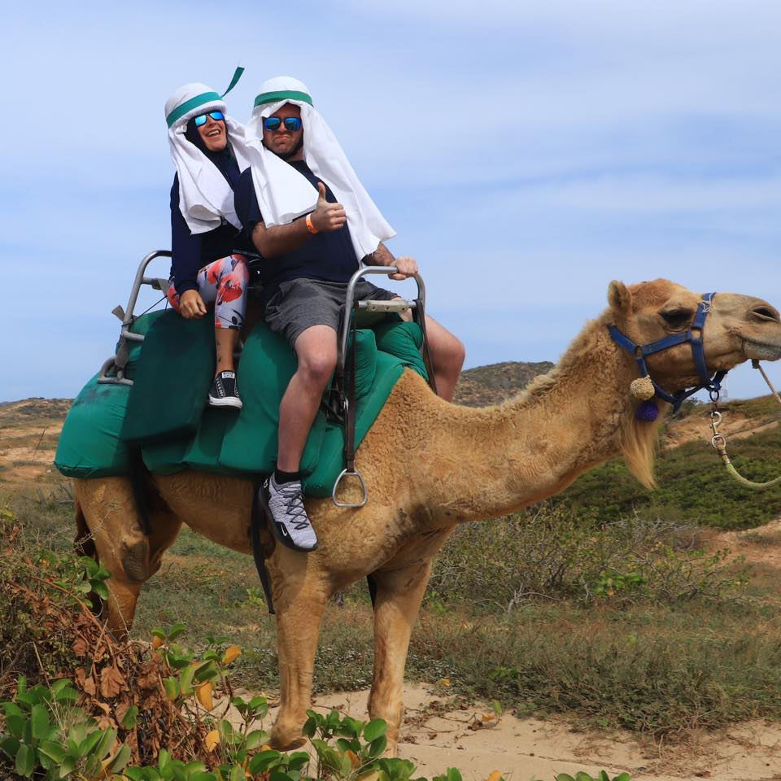
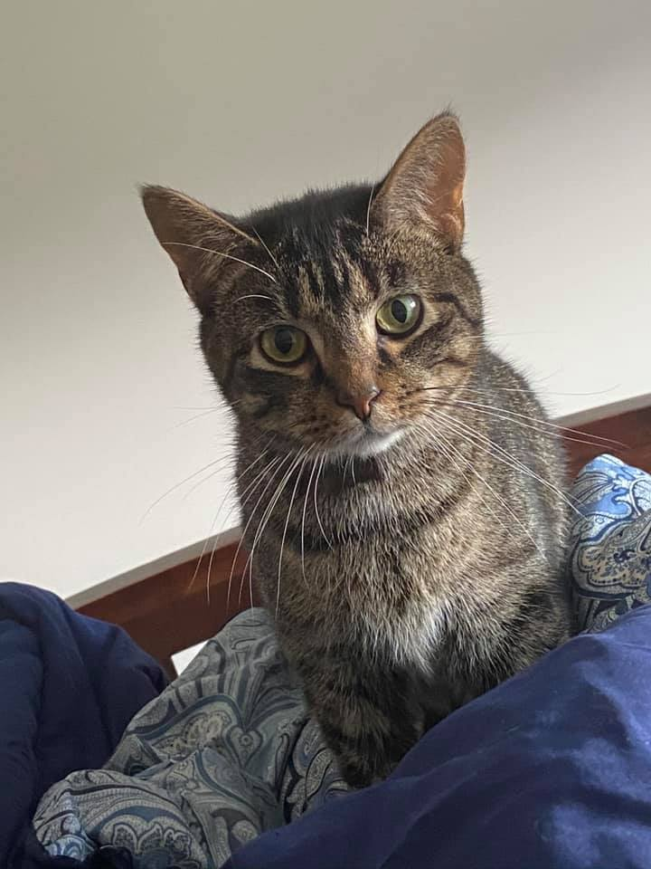

About Me

Born and raised in Chicago, Illinois, but eventually moved to the northwest suburbs towrds the end of my middle-school years. There I would live in a small little town by the name of Roselle, which was nested within much larger ones that people have heard of like Schaumburg, Illinois. While growing up, I played baseball my whole life; I played for 18 years. Eventually when I was 14 I got to play in The Little League World Series, also in Cooperstown - The Field of Dreams. While growing up I always had a passion for computers. Admittingly I never got to see how they were programmed and how they worked to the micro-level, but I really enjoyed the hardware components and understanding how those worked to make a system whole.
This is one of my cats', his name is Yonder. Yonder is about 3 years old now and found him when he was around 5 to 6 months of age. He is a very shy and timid cat, very loving, and affectionate. True fact - I never once heard him hiss. All he wants to do is trill, meow, and play. He's really cute when he takes a fuzzy ball and screeches for attention.
He did unfortunatly run into a health issue when he was about 2 years of age. For the longest time I thought he was having stomach issues. He kept on throwing up every other day. When I would switch his food though, it would seem like he would get better; it was to no avail though. After months of taking him in, I decided to get an x-ray done. Turns out he had massive stones in his bladder. He was puking becuase he was in so much pain. With this being said, I felt awful about the whole situation and wish I knew sooner so he wouldn't have suffered. With me now knowing this, I got him operated on right away and now he has been doing better than ever!
I found him and his brother - Yorkie, in an abandoned barn while I was going to school at Illinois State University. It was the middle of Febuary, cold and snowy. I found them curled up with each other in a corrner of a main room. It broke my heart, they were about 6 months of age. So, I picked them up, put them in my car, and gave them a warm and safe home. They are loving and caring cats.